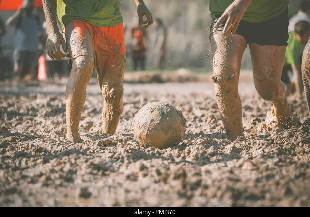

Exploring new worlds and gaining knowledge through literature.Engaging in fast-paced and competitive table tennis matches.Exploring nature, staying active, and enjoying scenic trails.Immersive gaming experiences and virtual adventures.

Football but socked in the mud.Enjoying a variety of movies across
different genres. By genres, I meant spies.
.Devou... I meant exploring different cultural cuisine